expect(locator).toBeVisible() failed Locator: locator('[data-testid="common-process-view"]:visible').getByText('Completed', { exact: true }) Expected: visible Timeout: 45000ms Error: element(s) not found Call log: - Expect "to.be.visible" with timeout 45000ms - waiting for locator('[data-testid="common-process-view"]:visible').getByText('Completed', { exact: true })
blocked
The existing workflow editor opens in the workspace.
Expected: Normal workspace entry preserves the workflow editor
Actual: The existing workflow editor opens in the workspace.
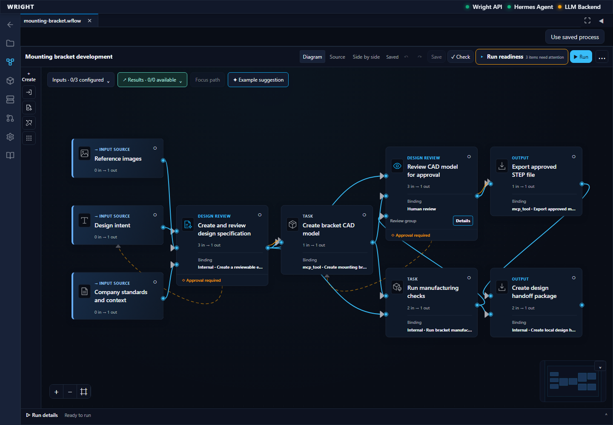
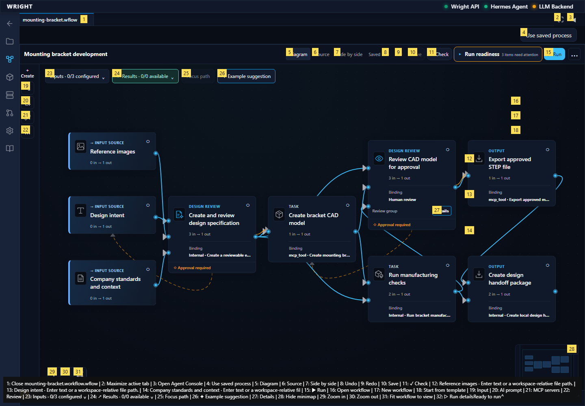
The mesh preparation process is open; its two configured provider operations are preserved.
Expected: The exact two-stage accepted source opens
Actual: The mesh preparation process is open; its two configured provider operations are preserved.
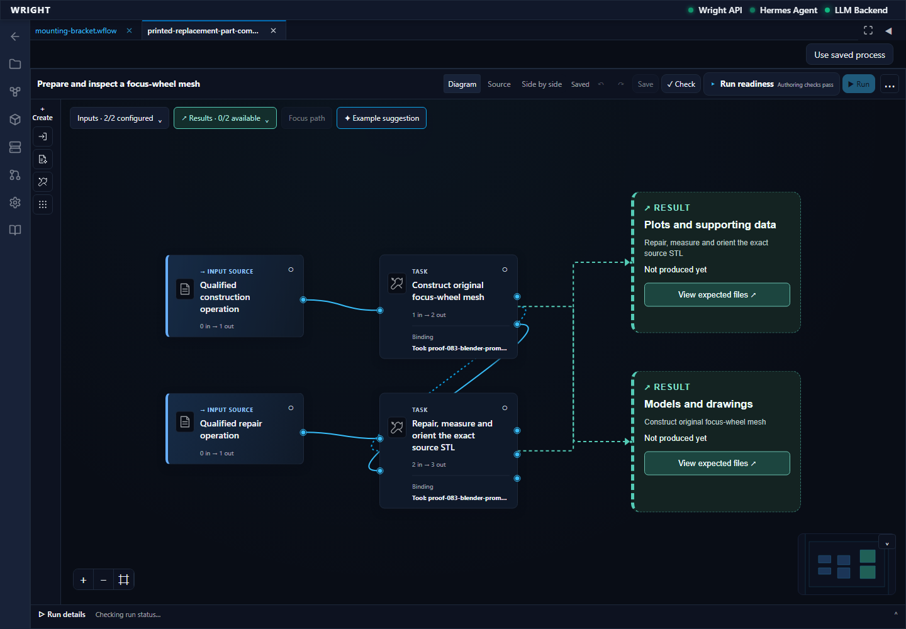
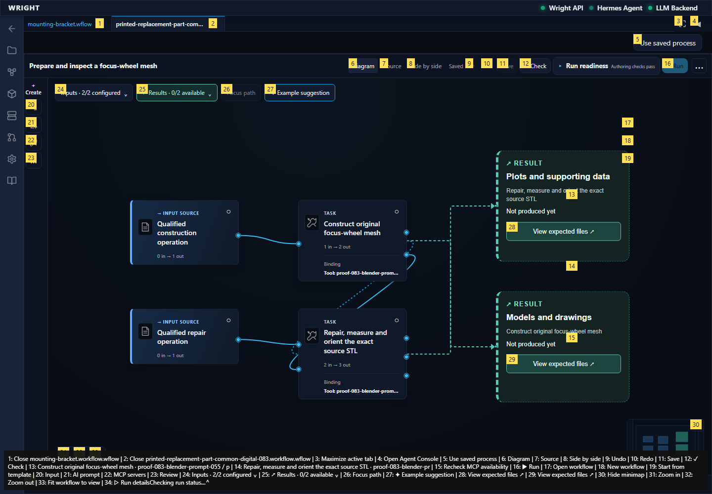
The shared common working view opens in a Wright workspace tab.
Expected: No generated interface is needed
Actual: The shared common working view opens in a Wright workspace tab.
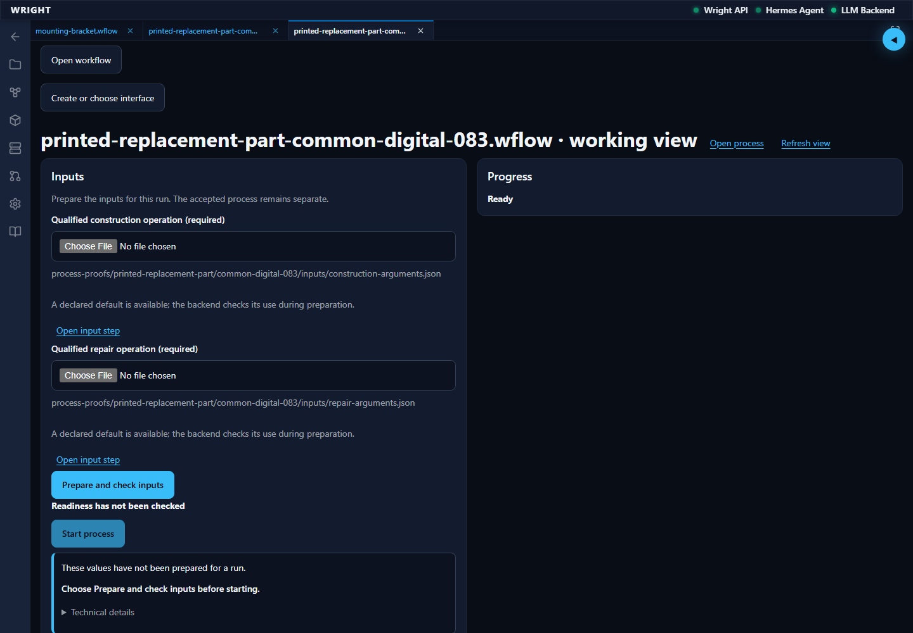
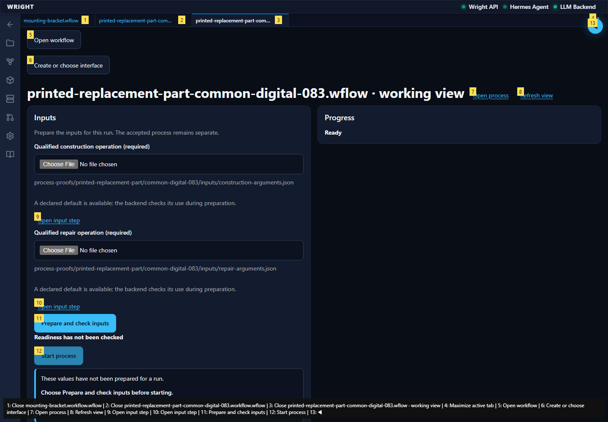
The configured native arguments and exact upstream-file dependency pass public readiness. No integration policy is used.
Expected: Ordinary public readiness permits this bounded saved process
Actual: The configured native arguments and exact upstream-file dependency pass public readiness. No integration policy is used.
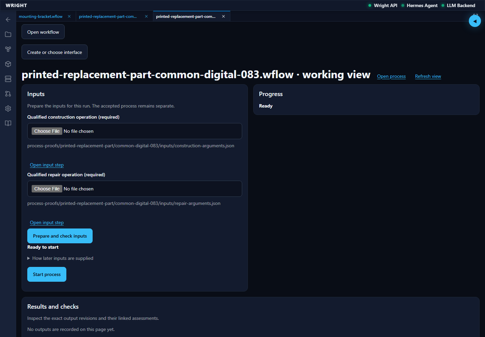
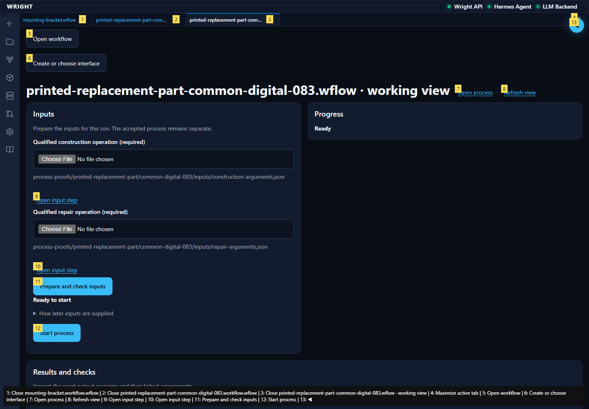
The normal UI receives one accepted run 8c042141e6c7422aa58ca1bbab14d86e; the common view follows backend-owned progress without a generated interface.
Expected: One durable digital run is accepted by the backend
Actual: The normal UI receives one accepted run 8c042141e6c7422aa58ca1bbab14d86e; the common view follows backend-owned progress without a generated interface.
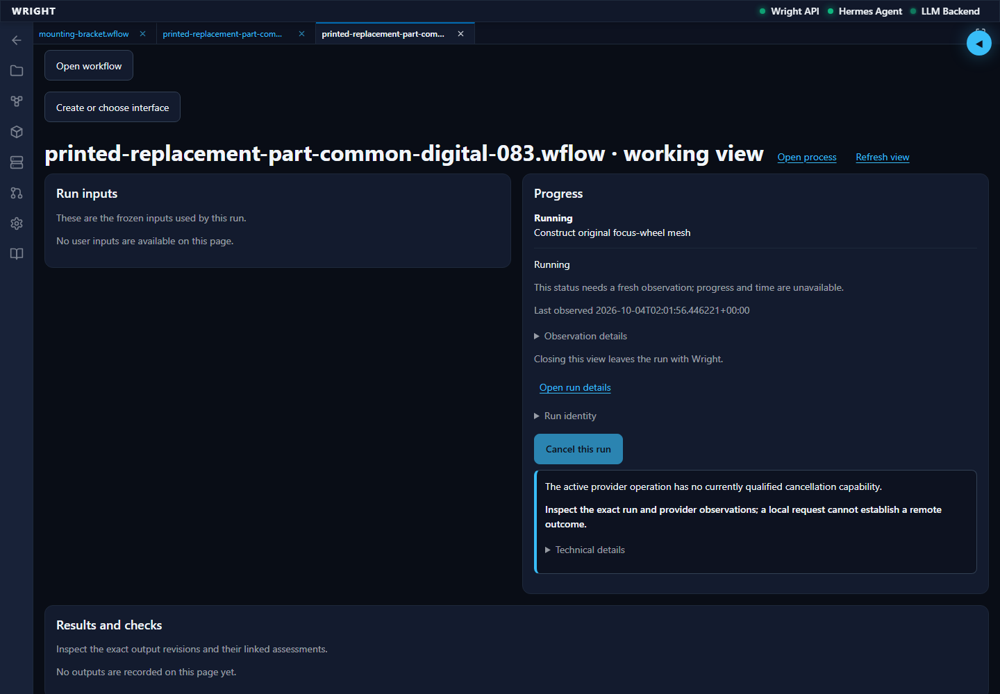
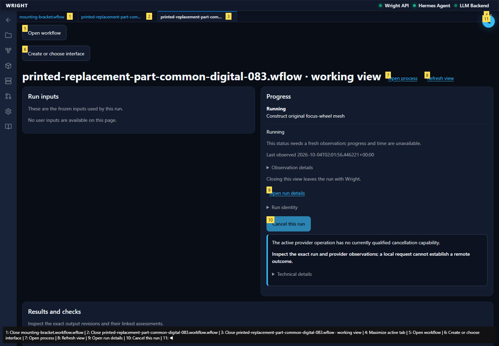
expect(locator).toBeVisible() failed Locator: locator('[data-testid="common-process-view"]:visible').getByText('Completed', { exact: true }) Expected: visible Timeout: 45000ms Error: element(s) not found Call log: - Expect "to.be.visible" with timeout 45000ms - waiting for locator('[data-testid="common-process-view"]:visible').getByText('Completed', { exact: true })
Expected: The declared next behavior
Actual: expect(locator).toBeVisible() failed Locator: locator('[data-testid="common-process-view"]:visible').getByText('Completed', { exact: true }) Expected: visible Timeout: 45000ms Error: element(s) not found Call log: - Expect "to.be.visible" with timeout 45000ms - waiting for locator('[data-testid="common-process-view"]:visible').getByText('Completed', { exact: true })
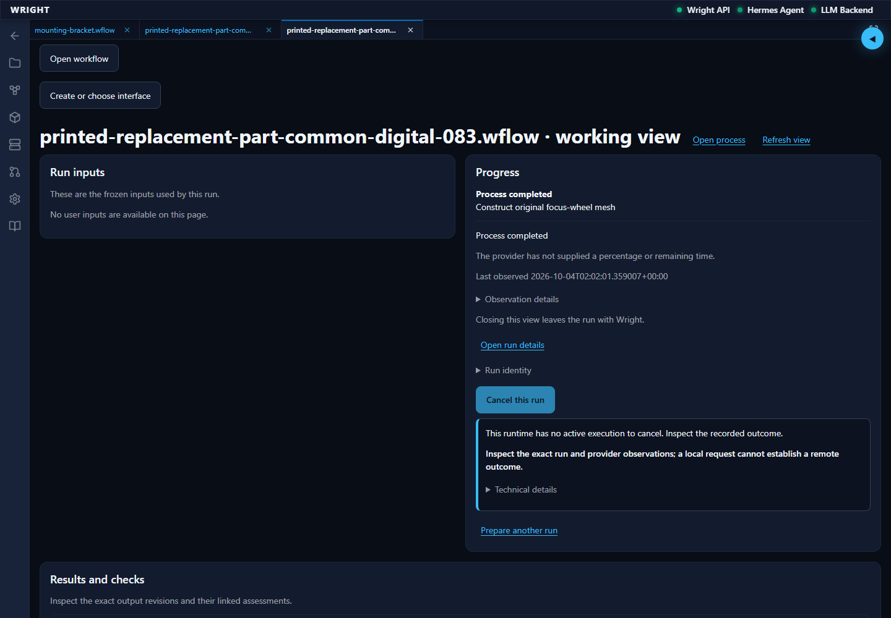
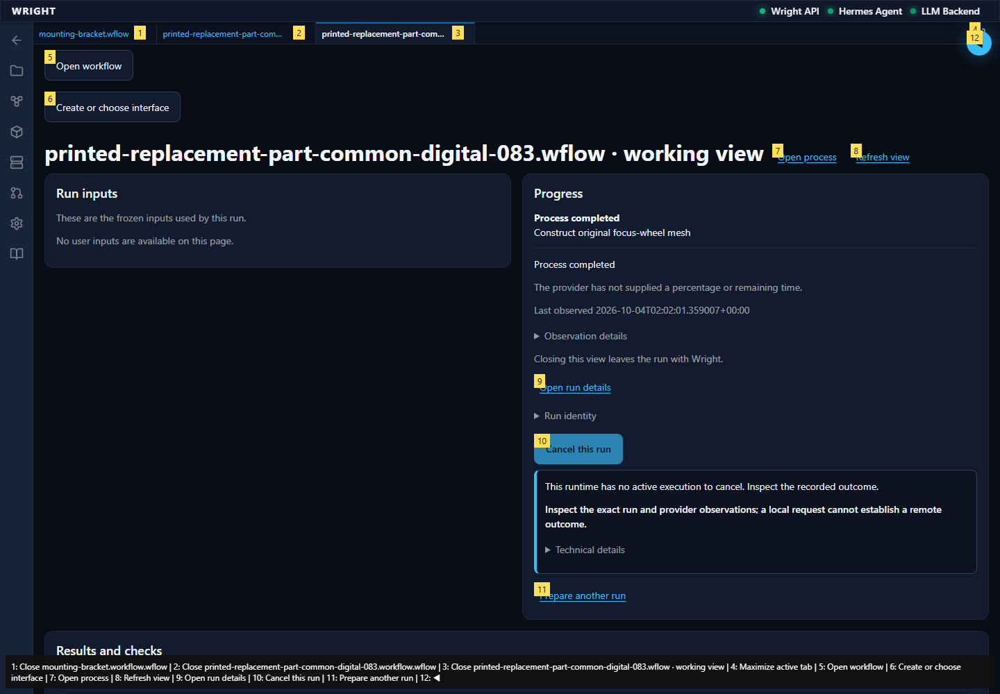